CODING AGENTS AS PIXEL WORLD MODELS
traex/DeepSeek-V4.1-Flash · mechanics_0032
点击播放 · 原生 RGB 像素
逐轮保存的候选
回放视频、检查图与代码变化。
每份候选均可单独播放。实际图片检查记录在下方工具轨迹中。
候选 01播放与检查图
点击播放 · 原生 RGB 像素
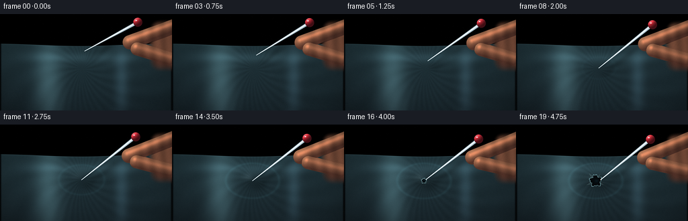
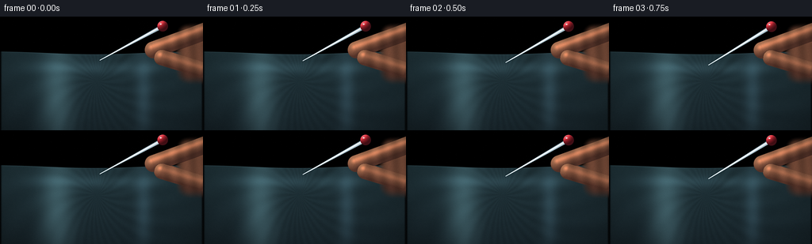
展开代码变化
--- 上一保存版本
+++ 本次保存版本
@@ -0,0 +1,458 @@
+from pathlib import Path
+
+import cv2
+import numpy as np
+from PIL import Image, ImageDraw, ImageFilter
+from scipy.ndimage import gaussian_filter
+
+import artifact_io
+
+
+WIDTH = 256
+HEIGHT = 144
+FRAMES = 20
+FPS = 4.0
+SS = 3
+RW = WIDTH * SS
+RH = HEIGHT * SS
+HERE = Path(__file__).resolve().parent
+
+
+def smoothstep(edge0, edge1, value):
+ t = np.clip((value - edge0) / (edge1 - edge0), 0.0, 1.0)
+ return t * t * (3.0 - 2.0 * t)
+
+
+def ease_in_out(t):
+ return 0.5 - 0.5 * np.cos(np.pi * np.clip(t, 0.0, 1.0))
+
+
+def line_geometry(xx, yy, start, end):
+ ax, ay = start
+ bx, by = end
+ vx, vy = bx - ax, by - ay
+ length2 = vx * vx + vy * vy
+ t = np.clip(((xx - ax) * vx + (yy - ay) * vy) / length2, 0.0, 1.0)
+ px = ax + t * vx
+ py = ay + t * vy
+ distance = np.hypot(xx - px, yy - py)
+ return t, distance, np.array([vx, vy]) / np.sqrt(length2)
+
+
+def capsule_mask(xx, yy, start, end, radius):
+ _, distance, _ = line_geometry(xx, yy, start, end)
+ return smoothstep(radius + 0.65, radius - 0.65, distance), distance
+
+
+def render_hand(xx, yy, frame_t, head_shift):
+ sx, sy = head_shift
+ palm_center = (250.0, 47.0 + 0.38 * sy)
+ palm = np.exp(
+ -(
+ ((xx - palm_center[0]) / 34.0) ** 4
+ + ((yy - palm_center[1]) / 45.0) ** 4
+ )
+ )
+ palm = smoothstep(0.52, 0.92, palm)
+
+ index_a = (264.0, 16.0 + 0.28 * sy)
+ index_b = (193.0 + 0.48 * sx, 42.0 + 0.72 * sy)
+ index, index_d = capsule_mask(xx, yy, index_a, index_b, 10.7)
+
+ thumb_a = (254.0, 67.0 + 0.24 * sy)
+ thumb_b = (204.0 + 0.35 * sx, 51.5 + 0.58 * sy)
+ thumb, thumb_d = capsule_mask(xx, yy, thumb_a, thumb_b, 10.1)
+
+ hand = np.maximum(palm, np.maximum(index, thumb))
+ edge_distance = np.maximum.reduce(
+ [
+ np.where(palm > 0.02, 1.0, 0.0),
+ np.where(index > 0.02, index_d, 99.0),
+ np.where(thumb > 0.02, thumb_d, 99.0),
+ ]
+ )
+
+ light = np.array([-0.58, -0.74, 0.67])
+ light /= np.linalg.norm(light)
+
+ index_t, _, _ = line_geometry(xx, yy, index_a, index_b)
+ thumb_t, _, _ = line_geometry(xx, yy, thumb_a, thumb_b)
+ index_height = np.sqrt(np.clip(1.0 - (index_d / 10.7) ** 2, 0.0, 1.0))
+ thumb_height = np.sqrt(np.clip(1.0 - (thumb_d / 10.1) ** 2, 0.0, 1.0))
+
+ ix = (xx - (index_a[0] + index_t * (index_b[0] - index_a[0]))) / 10.7
+ iy = (yy - (index_a[1] + index_t * (index_b[1] - index_a[1]))) / 10.7
+ tx = (xx - (thumb_a[0] + thumb_t * (thumb_b[0] - thumb_a[0]))) / 10.1
+ ty = (yy - (thumb_a[1] + thumb_t * (thumb_b[1] - thumb_a[1]))) / 10.1
+ nx = np.where(index > thumb, ix, tx)
+ ny = np.where(index > thumb, iy, ty)
+ nz = np.where(index > thumb, index_height, thumb_height)
+ normal_len = np.sqrt(nx * nx + ny * ny + nz * nz) + 1e-6
+ diffuse = np.clip(
+ (nx * light[0] + ny * light[1] + nz * light[2]) / normal_len, 0.0, 1.0
+ )
+
+ skin_shadow = np.array([72.0, 43.0, 36.0])
+ skin_mid = np.array([151.0, 92.0, 66.0])
+ skin_light = np.array([233.0, 171.0, 126.0])
+ tone = np.clip(0.18 + 0.78 * diffuse, 0.0, 1.0)
+ skin = skin_shadow[None, None, :] * (1.0 - tone[..., None])
+ skin += skin_mid[None, None, :] * tone[..., None] * (1.0 - 0.45 * tone[..., None])
+ skin += skin_light[None, None, :] * (0.42 * tone[..., None] ** 2)
+
+ skin *= (0.92 + 0.08 * np.cos(index_t * 17.0 + thumb_t * 9.0))[..., None]
+ pores = gaussian_filter(np.random.default_rng(17).normal(0, 1, (RH, RW)), 0.7)
+ skin *= (1.0 + 0.035 * pores)[..., None]
+
+ specular = np.clip(nx * -0.22 + ny * -0.35 + nz * 0.91, 0.0, 1.0) ** 18
+ skin += specular[..., None] * np.array([84.0, 45.0, 30.0]) * hand[..., None]
+
+ cool_rim = np.clip(
+ gaussian_filter(hand, 2.2) - gaussian_filter(hand, 0.7), 0.0, 1.0
+ )
+ skin += cool_rim[..., None] * np.array([35.0, 47.0, 48.0])
+ skin = np.clip(skin, 0.0, 255.0)
+
+ return hand, skin
+
+
+def make_pin_shaft(xx, yy, head, tip):
+ t, distance, normal = line_geometry(xx, yy, head, tip)
+ half_width = 2.45 - 1.95 * t
+ mask = smoothstep(half_width + 0.55, half_width - 0.55, distance)
+ mask *= smoothstep(0.01, 0.06, t)
+ signed = ((xx - head[0]) * normal[1] - (yy - head[1]) * normal[0])
+ width = np.maximum(half_width, 0.22)
+ across = np.clip(signed / width, -1.0, 1.0)
+
+ base = np.array([91.0, 105.0, 114.0])
+ steel = np.array([151.0, 164.0, 170.0])
+ shine = np.array([242.0, 247.0, 244.0])
+ edge_dark = 1.0 - 0.52 * across**2
+ highlight = np.exp(-((across + 0.18) / 0.25) ** 2)
+ color = base[None, None, :] * (1.0 - 0.35 * t[..., None])
+ color += steel[None, None, :] * (0.72 * edge_dark[..., None])
+ color += shine[None, None, :] * (0.72 * highlight[..., None])
+ color += np.array([28.0, 32.0, 30.0]) * np.clip(
+ (yy - head[1]) / max(tip[1] - head[1], 1.0), 0.0, 1.0
+ )[..., None]
+ return mask, np.clip(color, 0.0, 255.0)
+
+
+def make_pin_head(xx, yy, center, radius=7.1):
+ dx = (xx - center[0]) / radius
+ dy = (yy - center[1]) / radius
+ radial = np.hypot(dx, dy)
+ mask = smoothstep(1.0, 0.88, radial)
+ nz = np.sqrt(np.clip(1.0 - radial**2, 0.0, 1.0))
+ nx = dx
+ ny = dy
+ light = np.array([-0.52, -0.72, 0.46])
+ light /= np.linalg.norm(light)
+ diffuse = np.clip(nx * light[0] + ny * light[1] + nz * light[2], 0.0, 1.0)
+ color = np.broadcast_to(
+ np.array([68.0, 13.0, 19.0]), (RH, RW, 3)
+ ).astype(np.float32).copy()
+ color += np.array([136.0, 27.0, 35.0])[None, None, :] * diffuse[..., None]
+ color += np.array([216.0, 83.0, 79.0])[None, None, :] * (
+ 0.75 * diffuse[..., None] ** 4
+ )
+ glint = np.exp(-(((dx + 0.35) / 0.16) ** 2 + ((dy + 0.37) / 0.12) ** 2))
+ color += glint[..., None] * np.array([248.0, 232.0, 219.0])
+ color += np.array([8.0, 9.0, 12.0]) * (1.0 - nz[..., None])
+ return mask, np.clip(color, 0.0, 255.0)
+
+
+def irregular_hole_mask(center, radius, phase):
+ canvas = Image.new("L", (RW, RH), 0)
+ draw = ImageDraw.Draw(canvas)
+ angles = np.linspace(0.0, 2.0 * np.pi, 72, endpoint=False)
+ radius_noise = (
+ 1.0
+ + 0.17 * np.sin(5.0 * angles + phase)
+ + 0.09 * np.sin(9.0 * angles + 0.8)
+ + 0.045 * np.sin(13.0 * angles + 1.7)
+ )
+ radii = radius * radius_noise
+ points = [
+ (
+ (center[0] + r * np.cos(a)) * SS,
+ (center[1] + r * np.sin(a)) * SS,
+ )
+ for a, r in zip(angles, radii)
+ ]
+ draw.polygon(points, fill=255)
+ return np.asarray(canvas, dtype=np.float32) / 255.0
+
+
+def render_frame(index):
+ t = index / (FRAMES - 1)
+ yy, xx = np.mgrid[0:RH, 0:RW].astype(np.float32)
+ xx /= SS
+ yy /= SS
+ rng = np.random.default_rng(100 + index)
+
+ # Dim studio background with a soft, cool light pool.
+ bg = np.zeros((RH, RW, 3), dtype=np.float32)
+ bg[..., 0] = 10.0 + 4.0 * yy / HEIGHT
+ bg[..., 1] = 16.0 + 8.0 * yy / HEIGHT
+ bg[..., 2] = 21.0 + 9.0 * yy / HEIGHT
+ pool = np.exp(
+ -(((xx - 47.0) / 75.0) ** 2 + ((yy + 12.0) / 82.0) ** 2)
+ )
+ bg += pool[..., None] * np.array([8.0, 16.0, 17.0])
+ side_pool = np.exp(
+ -(((xx - 222.0) / 52.0) ** 2 + ((yy - 18.0) / 84.0) ** 2)
+ )
+ bg += side_pool[..., None] * np.array([10.0, 8.0, 5.0])
+ low_frequency = gaussian_filter(rng.normal(0, 1, (RH, RW)), 8.0)
+ bg += low_frequency[..., None] * 1.6
+
+ # The taut plastic sheet enters as a broad, gently curved surface.
+ top_edge = 43.5 + 4.0 * np.exp(-((xx - 120.0) / 82.0) ** 2)
+ sheet = smoothstep(top_edge - 0.7, top_edge + 1.0, yy)
+ sheet *= smoothstep(-1.0, 3.0, xx) * smoothstep(WIDTH + 1.0, WIDTH - 3.0, xx)
+
+ sheet_base = np.zeros_like(bg)
+ depth_fade = np.clip((yy - top_edge) / (HEIGHT - top_edge), 0.0, 1.0)
+ sheet_base[..., 0] = 32.0 - 8.0 * depth_fade
+ sheet_base[..., 1] = 51.0 - 14.0 * depth_fade
+ sheet_base[..., 2] = 57.0 - 14.0 * depth_fade
+
+ broad_sheen = np.exp(
+ -(((xx - 72.0) / 20.0) ** 2 + ((yy - 101.0) / 73.0) ** 2)
+ )
+ sheet_base += broad_sheen[..., None] * np.array([33.0, 47.0, 49.0])
+ cross_sheen = np.exp(
+ -(((xx - 181.0) / 10.0) ** 2 + ((yy - 99.0) / 58.0) ** 2)
+ )
+ sheet_base += cross_sheen[..., None] * np.array([17.0, 25.0, 29.0])
+ horizontal_sheen = np.exp(-((yy - 65.0) / 7.5) ** 2) * smoothstep(
+ 8.0, 78.0, xx
+ ) * smoothstep(249.0, 170.0, xx)
+ sheet_base += horizontal_sheen[..., None] * np.array([13.0, 19.0, 21.0])
+
+ # Fine stretch marks and translucent mottling.
+ cx0, cy0 = 122.0, 82.0
+ angle = np.arctan2((yy - cy0) / 1.7, xx - cx0)
+ radial = np.hypot(xx - cx0, (yy - cy0) * 1.7)
+ striation = np.sin(angle * 27.0 + radial * 0.08) * np.exp(-radial / 190.0)
+ sheet_base += (striation * 3.0)[..., None] * np.array([0.7, 1.0, 1.1])
+ mottle = gaussian_filter(rng.normal(0, 1, (RH, RW)), 5.5)
+ sheet_base += mottle[..., None] * 4.0
+ sheet_base += (0.7 * gaussian_filter(rng.normal(0, 1, (RH, RW)), 1.0))[..., None]
+ sheet_base = np.clip(sheet_base, 0.0, 255.0)
+
+ # Film-like edge highlight makes the stretched surface read clearly.
+ edge_line = np.exp(-((yy - top_edge) / 0.62) ** 2)
+ sheet_base += edge_line[..., None] * np.array([45.0, 63.0, 66.0])
+ img = bg * (1.0 - sheet[..., None]) + sheet_base * sheet[..., None]
+
+ tip_x = 126.0 - 7.5 * ease_in_out(t)
+ if t < 0.50:
+ tip_y = 55.0 + 27.0 * ease_in_out(t / 0.50)
+ elif t < 0.82:
+ tip_y = 82.0 + 2.0 * ease_in_out((t - 0.50) / 0.32)
+ else:
+ tip_y = 84.0 + 4.2 * ease_in_out((t - 0.82) / 0.18)
+
+ head_x = 205.0 - 5.0 * ease_in_out(t)
+ head_y = 12.0 + 10.0 * ease_in_out(t)
+ head_shift = (head_x - 205.0, head_y - 12.0)
+ contact = (tip_x, min(tip_y, 84.0))
+
+ press = smoothstep(0.23, 0.77, t)
+ depth = 5.6 * press
+ break_progress = smoothstep(0.78, 0.98, t)
+ depth *= 1.0 - 0.43 * break_progress
+
+ # Screen-space elastic depression, with a moving reflection on its rim.
+ dx = xx - contact[0]
+ dy = yy - contact[1]
+ radial_n = (dx / 19.0) ** 2 + (dy / 12.5) ** 2
+ dimple = np.exp(-radial_n * 1.55)
+ sx = 19.0
+ sy = 12.5
+ dhdx = -(dx / (sx * sx)) * depth * dimple
+ dhdy = -(dy / (sy * sy)) * depth * dimple
+ normal = np.dstack((-2.0 * dhdx, -2.0 * dhdy, np.ones_like(dhdx)))
+ normal /= np.linalg.norm(normal, axis=2, keepdims=True)
+ light_dir = np.array([-0.55, -0.72, 0.75])
+ light_dir /= np.linalg.norm(light_dir)
+ diffuse = np.clip(normal @ light_dir, 0.0, 1.0)
+ half_vec = light_dir + np.array([0.0, 0.0, 1.0])
+ half_vec /= np.linalg.norm(half_vec)
+ specular = np.clip(normal @ half_vec, 0.0, 1.0) ** 34
+ shade = 0.77 + 0.35 * diffuse
+ shade -= 0.13 * dimple * press
+ img *= (shade * sheet)[..., None]
+ img += (specular * (0.23 + 0.38 * press) * sheet)[..., None] * np.array(
+ [58.0, 70.0, 72.0]
+ )
+
+ # A faint compression ring travels outward while the tip bears down.
+ ring_radius = 1.0 + 1.1 * press
+ ring = np.exp(-((np.sqrt(np.maximum(radial_n, 0.0)) - ring_radius) / 0.12) ** 2)
+ ring *= sheet * press
+ img += ring[..., None] * np.array([5.0, 10.0, 11.0])
+
+ # Soft cast shadows keep the hand and pin grounded on the sheet.
+ shadow_canvas = Image.new("L", (RW, RH), 0)
+ shadow_draw = ImageDraw.Draw(shadow_canvas)
+ shadow_offset = (9.0, 8.5)
+ shadow_draw.line(
+ [
+ ((head_x + shadow_offset[0]) * SS, (head_y + shadow_offset[1]) * SS),
+ ((tip_x + shadow_offset[0]) * SS, (tip_y + shadow_offset[1]) * SS),
+ ],
+ fill=120,
+ width=int(5.2 * SS),
+ )
+ shadow_draw.ellipse(
+ [
+ (contact[0] + 2.5) * SS,
+ (contact[1] + 4.0) * SS,
+ (contact[0] + 20.0) * SS,
+ (contact[1] + 15.0) * SS,
+ ],
+ fill=70,
+ )
+ pin_shadow = gaussian_filter(
+ np.asarray(shadow_canvas, dtype=np.float32) / 255.0, 3.0 * SS
+ )
+ img *= (1.0 - 0.43 * pin_shadow * sheet)[..., None]
+
+ hand_mask, hand_color = render_hand(xx, yy, t, head_shift)
+ hand_shadow_canvas = Image.new("L", (RW, RH), 0)
+ hand_shadow_draw = ImageDraw.Draw(hand_shadow_canvas)
+ hand_shadow_draw.rectangle(
+ [(195 + 8) * SS, (14 + 12) * SS, 257 * SS, (75 + 12) * SS],
+ fill=80,
+ )
+ hand_shadow = gaussian_filter(
+ np.asarray(hand_shadow_canvas, dtype=np.float32) / 255.0, 9.0 * SS
+ )
+ img *= (1.0 - 0.22 * hand_shadow * sheet)[..., None]
+
+ # Stainless shaft first, then fingers so the grip occludes it naturally.
+ shaft_mask, shaft_color = make_pin_shaft(xx, yy, (head_x, head_y), (tip_x, tip_y))
+ img = img * (1.0 - shaft_mask[..., None]) + shaft_color * shaft_mask[..., None]
+
+ img = img * (1.0 - hand_mask[..., None]) + hand_color * hand_mask[..., None]
+
+ # A small, glossy enamel head remains visible above the fingers.
+ head_mask, head_color = make_pin_head(xx, yy, (head_x, head_y), 7.2)
+ img = img * (1.0 - head_mask[..., None]) + head_color * head_mask[..., None]
+
+ if break_progress > 0.001:
+ hole_radius = 1.25 + 6.2 * break_progress
+ phase = 0.8 + 0.15 * index
+ hole = irregular_hole_mask(contact, hole_radius, phase)
+ rim_outer = irregular_hole_mask(contact, hole_radius + 1.15, phase + 0.04)
+ rim = np.clip(rim_outer - hole, 0.0, 1.0)
+ hole_fill = np.zeros_like(img)
+ hole_fill[..., 0] = 6.0
+ hole_fill[..., 1] = 10.0
+ hole_fill[..., 2] = 13.0
+ inner_glow = np.exp(
+ -(((xx - contact[0] - 1.2) / 2.7) ** 2 + ((yy - contact[1]) / 2.1) ** 2)
+ )
+ hole_fill += inner_glow[..., None] * np.array([3.0, 13.0, 16.0])
+ img = img * (1.0 - hole[..., None]) + hole_fill * hole[..., None]
+ img += rim[..., None] * np.array([53.0, 71.0, 72.0])
+
+ tear_canvas = Image.new("RGBA", (RW, RH), (0, 0, 0, 0))
+ tear_draw = ImageDraw.Draw(tear_canvas)
+ for k, ang in enumerate([-2.55, -1.8, -0.75, 0.30, 1.25, 2.25]):
+ r0 = hole_radius + 0.8
+ r1 = hole_radius + 5.0 + 2.4 * (0.5 + 0.5 * np.sin(k * 2.1))
+ a = ang + 0.07 * np.sin(index + k)
+ tear_draw.line(
+ [
+ (
+ (contact[0] + r0 * np.cos(a)) * SS,
+ (contact[1] + r0 * np.sin(a) * 0.72) * SS,
+ ),
+ (
+ (contact[0] + r1 * np.cos(a)) * SS,
+ (contact[1] + r1 * np.sin(a) * 0.72) * SS,
+ ),
+ ],
+ fill=(183, 214, 213, int(95 + 70 * break_progress)),
+ width=max(1, int(0.55 * SS)),
+ )
+ tear_layer = np.asarray(tear_canvas, dtype=np.float32) / 255.0
+ tear_alpha = gaussian_filter(tear_layer[..., 3], 0.35 * SS)[..., None]
+ img = img * (1.0 - 0.55 * tear_alpha) + np.array([92.0, 121.0, 123.0]) * (
+ 0.55 * tear_alpha
+ )
+
+ # Thin translucent folds peel away from the fresh opening.
+ fold_layer = Image.new("RGBA", (RW, RH), (0, 0, 0, 0))
+ fold_draw = ImageDraw.Draw(fold_layer)
+ for k, (ang, length, width) in enumerate(
+ [(-2.25, 10.0, 4.5), (-1.25, 8.0, 3.8), (0.55, 7.0, 3.2), (2.55, 9.0, 4.0)]
+ ):
+ a = ang + 0.10 * np.sin(index * 0.7 + k)
+ base = np.array(
+ [
+ contact[0] + (hole_radius + 0.5) * np.cos(a),
+ contact[1] + (hole_radius + 0.5) * np.sin(a) * 0.72,
+ ]
+ )
+ direction = np.array([np.cos(a), np.sin(a) * 0.72])
+ side = np.array([-direction[1], direction[0]])
+ p0 = base - side * width * 0.5
+ p1 = base + side * width * 0.5
+ p2 = base + direction * length + side * width * 0.25
+ fold_draw.polygon(
+ [(p0[0] * SS, p0[1] * SS), (p1[0] * SS, p1[1] * SS), (p2[0] * SS, p2[1] * SS)],
+ fill=(166, 204, 203, int(95 * break_progress)),
+ )
+ folds = np.asarray(fold_layer, dtype=np.float32) / 255.0
+ fold_alpha = folds[..., 3][..., None]
+ img = img * (1.0 - 0.40 * fold_alpha) + folds[..., :3] * 255.0 * (
+ 0.40 * fold_alpha
+ )
+
+ # Gentle optical bloom around the brightest reflections and steel edge.
+ luminance = img.mean(axis=2)
+ bright = np.clip((luminance - 150.0) / 105.0, 0.0, 1.0)
+ bloom = gaussian_filter(bright, 5.0 * SS)
+ img += bloom[..., None] * np.array([7.0, 10.0, 10.0])
+
+ vignette = 1.0 - 0.28 * (
+ ((xx - WIDTH * 0.5) / (WIDTH * 0.62)) ** 2
+ + ((yy - HEIGHT * 0.48) / (HEIGHT * 0.74)) ** 2
+ ) ** 1.55
+ img *= np.clip(vignette, 0.70, 1.0)[..., None]
+ img += gaussian_filter(rng.normal(0, 1, (RH, RW)), 0.55)[..., None] * 1.35
+
+ img = np.clip(img, 0.0, 255.0).astype(np.uint8)
+ frame = Image.fromarray(img, "RGB").resize(
+ (WIDTH, HEIGHT), Image.Resampling.LANCZOS
+ )
+ frame = frame.filter(ImageFilter.UnsharpMask(radius=0.55, percent=65, threshold=2))
+ return np.asarray(frame, dtype=np.uint8)
+
+
+def main():
+ frames = np.stack([render_frame(i) for i in range(FRAMES)])
+ artifact_io.save(frames, HERE)
+
+ writer = cv2.VideoWriter(
+ str(HERE / "video.mp4"),
+ cv2.VideoWriter_fourcc(*"mp4v"),
+ FPS,
+ (WIDTH, HEIGHT),
+ )
+ if writer.isOpened():
+ for frame in frames:
+ writer.write(cv2.cvtColor(frame, cv2.COLOR_RGB2BGR))
+ writer.release()
+
+ print(f"wrote {frames.shape} RGB frames at {FPS:g} fps")
+
+
+if __name__ == "__main__":
+ main()
候选 02播放与检查图
点击播放 · 原生 RGB 像素
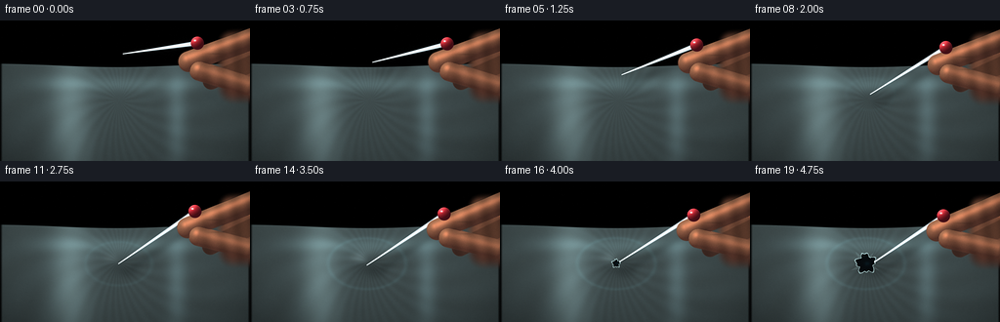
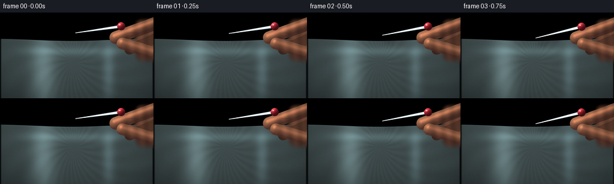
展开代码变化
--- 上一保存版本
+++ 本次保存版本
@@ -63,12 +63,18 @@
thumb_b = (204.0 + 0.35 * sx, 51.5 + 0.58 * sy)
thumb, thumb_d = capsule_mask(xx, yy, thumb_a, thumb_b, 10.1)
- hand = np.maximum(palm, np.maximum(index, thumb))
+ middle_a = (274.0, 37.0 + 0.20 * sy)
+ middle_b = (216.0 + 0.28 * sx, 62.0 + 0.58 * sy)
+ middle, middle_d = capsule_mask(xx, yy, middle_a, middle_b, 8.6)
+ middle *= 0.92
+
+ hand = np.maximum(palm, np.maximum(index, np.maximum(thumb, middle)))
edge_distance = np.maximum.reduce(
[
np.where(palm > 0.02, 1.0, 0.0),
np.where(index > 0.02, index_d, 99.0),
np.where(thumb > 0.02, thumb_d, 99.0),
+ np.where(middle > 0.02, middle_d, 99.0),
]
)
@@ -107,6 +113,25 @@
specular = np.clip(nx * -0.22 + ny * -0.35 + nz * 0.91, 0.0, 1.0) ** 18
skin += specular[..., None] * np.array([84.0, 45.0, 30.0]) * hand[..., None]
+ # Subtle knuckle and finger creases break up the otherwise smooth silhouettes.
+ crease_a = np.exp(
+ -(
+ ((xx - (220.0 + 0.5 * sx)) / 8.2) ** 2
+ + ((yy - (34.0 + 0.72 * sy)) / 0.75) ** 2
+ )
+ )
+ crease_b = np.exp(
+ -(
+ ((xx - (222.0 + 0.4 * sx)) / 7.2) ** 2
+ + ((yy - (47.0 + 0.65 * sy)) / 0.70) ** 2
+ )
+ )
+ creases = 0.72 * np.maximum(crease_a, crease_b) * hand
+ skin *= (1.0 - 0.20 * creases)[..., None]
+
+ middle_occlusion = middle * (1.0 - index) * (1.0 - thumb)
+ skin *= (1.0 - 0.24 * middle_occlusion)[..., None]
+
cool_rim = np.clip(
gaussian_filter(hand, 2.2) - gaussian_filter(hand, 0.7), 0.0, 1.0
)
@@ -125,14 +150,14 @@
width = np.maximum(half_width, 0.22)
across = np.clip(signed / width, -1.0, 1.0)
- base = np.array([91.0, 105.0, 114.0])
- steel = np.array([151.0, 164.0, 170.0])
- shine = np.array([242.0, 247.0, 244.0])
+ base = np.array([103.0, 116.0, 123.0])
+ steel = np.array([178.0, 188.0, 191.0])
+ shine = np.array([252.0, 252.0, 247.0])
edge_dark = 1.0 - 0.52 * across**2
highlight = np.exp(-((across + 0.18) / 0.25) ** 2)
color = base[None, None, :] * (1.0 - 0.35 * t[..., None])
- color += steel[None, None, :] * (0.72 * edge_dark[..., None])
- color += shine[None, None, :] * (0.72 * highlight[..., None])
+ color += steel[None, None, :] * (0.84 * edge_dark[..., None])
+ color += shine[None, None, :] * (0.88 * highlight[..., None])
color += np.array([28.0, 32.0, 30.0]) * np.clip(
(yy - head[1]) / max(tip[1] - head[1], 1.0), 0.0, 1.0
)[..., None]
@@ -194,13 +219,13 @@
# Dim studio background with a soft, cool light pool.
bg = np.zeros((RH, RW, 3), dtype=np.float32)
- bg[..., 0] = 10.0 + 4.0 * yy / HEIGHT
+ bg[..., 0] = 14.0 + 5.0 * yy / HEIGHT
bg[..., 1] = 16.0 + 8.0 * yy / HEIGHT
- bg[..., 2] = 21.0 + 9.0 * yy / HEIGHT
+ bg[..., 2] = 18.0 + 8.0 * yy / HEIGHT
pool = np.exp(
-(((xx - 47.0) / 75.0) ** 2 + ((yy + 12.0) / 82.0) ** 2)
)
- bg += pool[..., None] * np.array([8.0, 16.0, 17.0])
+ bg += pool[..., None] * np.array([7.0, 13.0, 13.0])
side_pool = np.exp(
-(((xx - 222.0) / 52.0) ** 2 + ((yy - 18.0) / 84.0) ** 2)
)
@@ -215,29 +240,29 @@
sheet_base = np.zeros_like(bg)
depth_fade = np.clip((yy - top_edge) / (HEIGHT - top_edge), 0.0, 1.0)
- sheet_base[..., 0] = 32.0 - 8.0 * depth_fade
- sheet_base[..., 1] = 51.0 - 14.0 * depth_fade
- sheet_base[..., 2] = 57.0 - 14.0 * depth_fade
+ sheet_base[..., 0] = 67.0 - 11.0 * depth_fade
+ sheet_base[..., 1] = 80.0 - 13.0 * depth_fade
+ sheet_base[..., 2] = 81.0 - 13.0 * depth_fade
broad_sheen = np.exp(
-(((xx - 72.0) / 20.0) ** 2 + ((yy - 101.0) / 73.0) ** 2)
)
- sheet_base += broad_sheen[..., None] * np.array([33.0, 47.0, 49.0])
+ sheet_base += broad_sheen[..., None] * np.array([43.0, 54.0, 55.0])
cross_sheen = np.exp(
-(((xx - 181.0) / 10.0) ** 2 + ((yy - 99.0) / 58.0) ** 2)
)
- sheet_base += cross_sheen[..., None] * np.array([17.0, 25.0, 29.0])
+ sheet_base += cross_sheen[..., None] * np.array([24.0, 33.0, 35.0])
horizontal_sheen = np.exp(-((yy - 65.0) / 7.5) ** 2) * smoothstep(
8.0, 78.0, xx
) * smoothstep(249.0, 170.0, xx)
- sheet_base += horizontal_sheen[..., None] * np.array([13.0, 19.0, 21.0])
+ sheet_base += horizontal_sheen[..., None] * np.array([19.0, 27.0, 28.0])
# Fine stretch marks and translucent mottling.
cx0, cy0 = 122.0, 82.0
angle = np.arctan2((yy - cy0) / 1.7, xx - cx0)
radial = np.hypot(xx - cx0, (yy - cy0) * 1.7)
striation = np.sin(angle * 27.0 + radial * 0.08) * np.exp(-radial / 190.0)
- sheet_base += (striation * 3.0)[..., None] * np.array([0.7, 1.0, 1.1])
+ sheet_base += (striation * 3.5)[..., None] * np.array([0.7, 1.0, 1.1])
mottle = gaussian_filter(rng.normal(0, 1, (RH, RW)), 5.5)
sheet_base += mottle[..., None] * 4.0
sheet_base += (0.7 * gaussian_filter(rng.normal(0, 1, (RH, RW)), 1.0))[..., None]
@@ -245,24 +270,24 @@
# Film-like edge highlight makes the stretched surface read clearly.
edge_line = np.exp(-((yy - top_edge) / 0.62) ** 2)
- sheet_base += edge_line[..., None] * np.array([45.0, 63.0, 66.0])
+ sheet_base += edge_line[..., None] * np.array([52.0, 65.0, 66.0])
img = bg * (1.0 - sheet[..., None]) + sheet_base * sheet[..., None]
tip_x = 126.0 - 7.5 * ease_in_out(t)
- if t < 0.50:
- tip_y = 55.0 + 27.0 * ease_in_out(t / 0.50)
+ if t < 0.58:
+ tip_y = 34.0 + 50.0 * ease_in_out(t / 0.58)
elif t < 0.82:
- tip_y = 82.0 + 2.0 * ease_in_out((t - 0.50) / 0.32)
+ tip_y = 84.0 + 2.0 * ease_in_out((t - 0.58) / 0.24)
else:
tip_y = 84.0 + 4.2 * ease_in_out((t - 0.82) / 0.18)
- head_x = 205.0 - 5.0 * ease_in_out(t)
- head_y = 12.0 + 10.0 * ease_in_out(t)
- head_shift = (head_x - 205.0, head_y - 12.0)
+ head_x = 202.0 - 4.0 * ease_in_out(t)
+ head_y = 23.0 + 12.0 * ease_in_out(t)
+ head_shift = (head_x - 202.0, head_y - 23.0)
contact = (tip_x, min(tip_y, 84.0))
press = smoothstep(0.23, 0.77, t)
- depth = 5.6 * press
+ depth = 7.4 * press
break_progress = smoothstep(0.78, 0.98, t)
depth *= 1.0 - 0.43 * break_progress
@@ -345,7 +370,7 @@
img = img * (1.0 - head_mask[..., None]) + head_color * head_mask[..., None]
if break_progress > 0.001:
- hole_radius = 1.25 + 6.2 * break_progress
+ hole_radius = 1.45 + 7.3 * break_progress
phase = 0.8 + 0.15 * index
hole = irregular_hole_mask(contact, hole_radius, phase)
rim_outer = irregular_hole_mask(contact, hole_radius + 1.15, phase + 0.04)
@@ -359,7 +384,7 @@
)
hole_fill += inner_glow[..., None] * np.array([3.0, 13.0, 16.0])
img = img * (1.0 - hole[..., None]) + hole_fill * hole[..., None]
- img += rim[..., None] * np.array([53.0, 71.0, 72.0])
+ img += rim[..., None] * np.array([76.0, 91.0, 91.0])
tear_canvas = Image.new("RGBA", (RW, RH), (0, 0, 0, 0))
tear_draw = ImageDraw.Draw(tear_canvas)
候选 03播放与检查图
点击播放 · 原生 RGB 像素
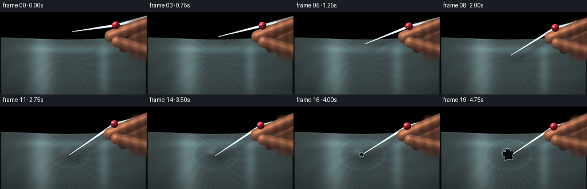
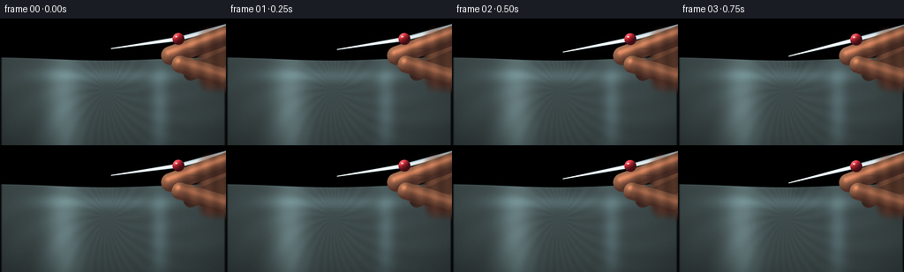
展开代码变化
--- 上一保存版本
+++ 本次保存版本
@@ -161,6 +161,27 @@
color += np.array([28.0, 32.0, 30.0]) * np.clip(
(yy - head[1]) / max(tip[1] - head[1], 1.0), 0.0, 1.0
)[..., None]
+ return mask, np.clip(color, 0.0, 255.0)
+
+
+def make_pin_tail(xx, yy, head):
+ # Continue the pin beyond the grip so the object's full silhouette reads.
+ tail_end = (267.0, head[1] - 17.0)
+ t, distance, normal = line_geometry(xx, yy, head, tail_end)
+ half_width = 2.3 + 0.65 * t
+ mask = smoothstep(half_width + 0.55, half_width - 0.55, distance)
+ mask *= smoothstep(0.04, 0.10, t)
+ signed = (xx - head[0]) * normal[1] - (yy - head[1]) * normal[0]
+ across = np.clip(signed / np.maximum(half_width, 0.22), -1.0, 1.0)
+ edge_dark = 1.0 - 0.52 * across**2
+ highlight = np.exp(-((across + 0.18) / 0.25) ** 2)
+ color = np.broadcast_to(np.array([84.0, 98.0, 106.0]), (RH, RW, 3)).copy()
+ color += np.array([181.0, 191.0, 194.0])[None, None, :] * (
+ 0.84 * edge_dark[..., None]
+ )
+ color += np.array([250.0, 252.0, 249.0])[None, None, :] * (
+ 0.76 * highlight[..., None]
+ )
return mask, np.clip(color, 0.0, 255.0)
@@ -360,7 +381,9 @@
img *= (1.0 - 0.22 * hand_shadow * sheet)[..., None]
# Stainless shaft first, then fingers so the grip occludes it naturally.
+ tail_mask, tail_color = make_pin_tail(xx, yy, (head_x, head_y))
shaft_mask, shaft_color = make_pin_shaft(xx, yy, (head_x, head_y), (tip_x, tip_y))
+ img = img * (1.0 - tail_mask[..., None]) + tail_color * tail_mask[..., None]
img = img * (1.0 - shaft_mask[..., None]) + shaft_color * shaft_mask[..., None]
img = img * (1.0 - hand_mask[..., None]) + hand_color * hand_mask[..., None]
可观测工具轨迹
实际执行的命令与返回图片。
命令 1exit 0
/bin/bash -c "pwd && rg --files -g '"'!*.mp4'"' -g '"'!*.mov'"' | sed -n '1,160p'"
命令 2exit 0
/bin/bash -c "printf '%s\\n' '--- prompt.txt ---'; sed -n '1,240p' prompt.txt; printf '%s\\n' '--- GENERATION_RULES.md ---'; sed -n '1,280p' GENERATION_RULES.md; printf '%s\\n' '--- task_spec.json ---'; cat task_spec.json"
命令 3exit 0
/bin/bash -c "ls -la && find . -maxdepth 2 -type f -printf '%p %s bytes\\n' | sort | sed -n '1,200p'"
命令 4exit 0
/bin/bash -c "sed -n '1,260p' artifact_io.py"
命令 5exit 0
/bin/bash -c "sed -n '1,260p' player_template.html"
命令 6exit 0
/bin/bash -c "python - <<'PY' import importlib.util for m in ['numpy','PIL','cv2','imageio','imageio_ffmpeg','scipy']: print(m, bool(importlib.util.find_spec(m))) PY command -v ffmpeg || true ffmpeg -version | head -n 2"
命令 7exit 1
/bin/bash -c 'python generate.py'
命令 8exit 0
/bin/bash -c 'python generate.py'
命令 9exit 0
/bin/bash -c "python - <<'PY'
from PIL import Image, ImageDraw
import numpy as np
ids=[0,6,10,14,16,18,19]
ims=[Image.open(f'frames/{i:02d}.png') for i in ids]
w,h=256,144
out=Image.new('RGB',(w*2, (h+20)*4),(22,25,31))
d=ImageDraw.Draw(out)
for k,(i,im) in enumerate(zip(ids,ims)):
x=(k%2)*w; y=(k//2)*(h+20)
d.text((x+4,y+3),f'frame {i}',fill='white')
out.paste(im.resize((w*2,h*2),Image.Resampling.NEAREST),(x,y+20)) if False else out.paste(im,(x,y+20))
out.save('contact_sheet.png')
PY
ls -lh video.mp4 pixels.npz inspection.png transition_check.png contact_sheet.png"命令 10exit 0
/bin/bash -c 'python generate.py'
命令 11exit 0
/bin/bash -c "python - <<'PY'
from PIL import Image, ImageDraw
ids=[0,1,2,3,4,5,8,10,12,14,16,18]
w,h=256,144
out=Image.new('RGB',(w*3, (h+20)*4),(22,25,31))
d=ImageDraw.Draw(out)
for k,i in enumerate(ids):
x=(k%3)*w; y=(k//3)*(h+20)
d.text((x+4,y+3),f'frame {i}',fill='white')
out.paste(Image.open(f'frames/{i:02d}.png'),(x,y+20))
out.save('contact_sheet.png')
PY"命令 12exit 0
/bin/bash -c "python - <<'PY'
from PIL import Image
for i in [0,6,12,17,19]:
im=Image.open(f'frames/{i:02d}.png')
im.resize((1024,576),Image.Resampling.NEAREST).save(f'frame_{i:02d}_4x.png')
PY"命令 13exit 0
/bin/bash -c "python - <<'PY'
from pathlib import Path
import json
import cv2
import numpy as np
from PIL import Image
with np.load('pixels.npz') as z:
p = z['pixels']
print('pixels', p.shape, p.dtype, 'range', int(p.min()), int(p.max()))
frames = sorted(Path('frames').glob('*.png'))
print('pngs', len(frames), frames[0].name, frames[-1].name)
sizes = {Image.open(f).size for f in frames}
print('sizes', sizes)
cap = cv2.VideoCapture('video.mp4')
count = int(cap.get(cv2.CAP_PROP_FRAME_COUNT))
fps = cap.get(cv2.CAP_PROP_FPS)
w = int(cap.get(cv2.CAP_PROP_FRAME_WIDTH)); h = int(cap.get(cv2.CAP_PROP_FRAME_HEIGHT))
print('mp4', count, f'{fps:.3f}', (w,h))
ok=True; prev=None; diffs=[]
while True:
ret, frame = cap.read()
if not ret: break
if prev is not None: diffs.append(float(np.abs(frame.astype(np.float32)-prev).mean()))
prev=frame
cap.release()
print('read frames', len(diffs)+1, 'mean adjacent diff', round(float(np.mean(diffs)),3), 'min/max', round(min(diffs),3), round(max(diffs),3))
print('index.html', Path('index.html').stat().st_size, 'bytes')
print('video.mp4', Path('video.mp4').stat().st_size, 'bytes')
print('spec', json.loads(Path('task_spec.json').read_text()))
PY"命令 14exit 0
/bin/bash -c "python - <<'PY'
import cv2
cap=cv2.VideoCapture('video.mp4')
frames=[]
while True:
ret,f=cap.read()
if not ret: break
frames.append(f)
cap.release()
for i in [0,8,16,19]:
cv2.imwrite(f'.tmp/decoded_{i:02d}.png', frames[i])
print('decoded', len(frames), frames[0].shape)
PY"命令 15exit 0
/bin/bash -c "python - <<'PY'
from PIL import Image
import numpy as np
ids=[0,3,6,9,12,15,17,19]
w,h=256,144
sheet=Image.new('RGB',(w*4,(h+18)*2),(26,29,34))
from PIL import ImageDraw
d=ImageDraw.Draw(sheet)
for k,i in enumerate(ids):
x=(k%4)*w; y=(k//4)*(h+18)
d.text((x+4,y+3),f'frame {i:02d}',fill=(235,238,240))
sheet.paste(Image.open(f'frames/{i:02d}.png'),(x,y+18))
sheet.save('.tmp/final_inspection.png')
PY"命令 16exit 0
/bin/bash -c "python generate.py && python - <<'PY'
import cv2
import numpy as np
from pathlib import Path
cap=cv2.VideoCapture('video.mp4')
frames=[]
while True:
ret,f=cap.read()
if not ret: break
frames.append(f)
cap.release()
with np.load('pixels.npz') as z: p=z['pixels']
assert p.shape==(144,256,20) and p.dtype==np.uint32
assert len(frames)==20 and frames[0].shape==(144,256,3)
assert len(list(Path('frames').glob('*.png')))==20
assert Path('index.html').is_file() and Path('video.mp4').is_file()
print('verified:', len(frames), 'decoded frames,', frames[0].shape[1], 'x', frames[0].shape[0], ', 4 fps, RGB artifacts complete')
PY"视觉工具实际返回图片 1

视觉工具实际返回图片 2
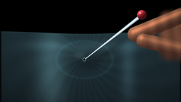
视觉工具实际返回图片 3
视觉工具实际返回图片 4
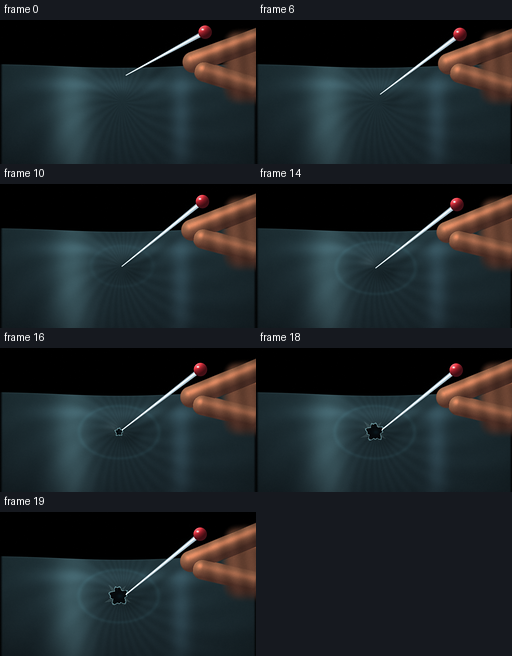
视觉工具实际返回图片 5

视觉工具实际返回图片 6
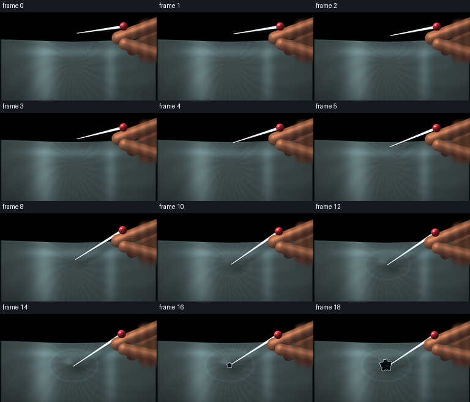
视觉工具实际返回图片 7
视觉工具实际返回图片 8
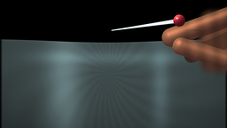
视觉工具实际返回图片 9
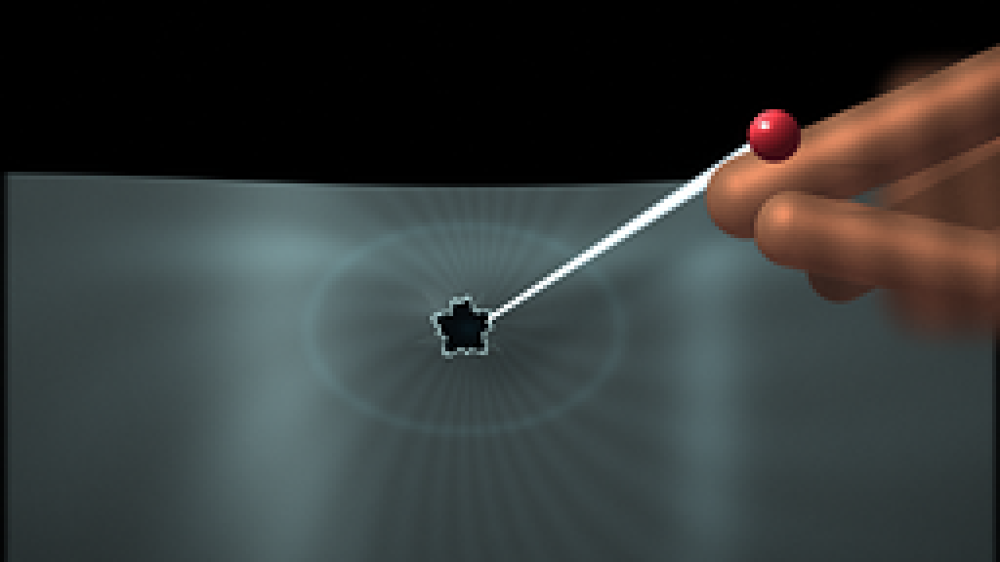
视觉工具实际返回图片 10
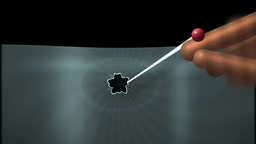
视觉工具实际返回图片 11
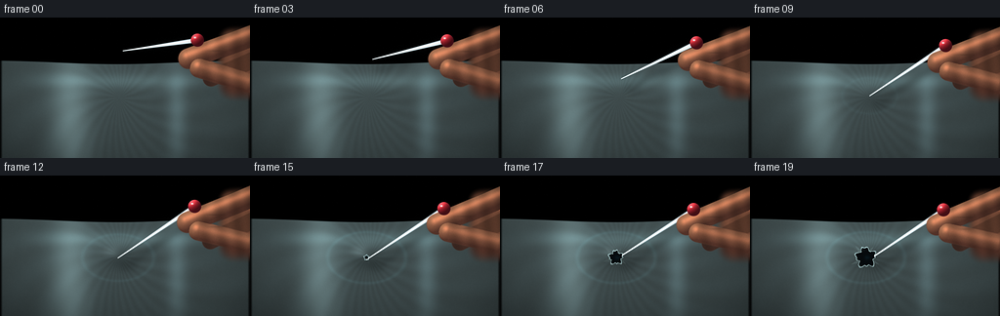
视觉工具实际返回图片 12
保存候选 3 份；完成命令 16 次；可验证图片返回 12 张。原始 API 响应与完整日志保留在本地。